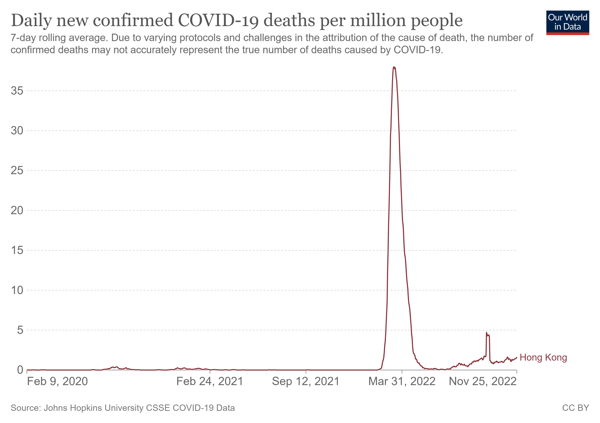

Covid19 Timeline
The Covid 19 has been affecting all parts of the world for more than a year. Hong Kong has been fighting the epidemic since the beginning of 2020. First, the number of people arriving or traveling to the mainland during the incubation period was confirmed, and then the outbreak occurred in Hong Kong. One year later, the fight against the coronavirus outbreak is beginning. The COVID-19 vaccine arrived in Hong Kong in February 2021 and public vaccination began. Over the past two years, the epidemic in Hong Kong has experienced ups and downs, and people still hope the epidemic will disappear as soon as possible.
